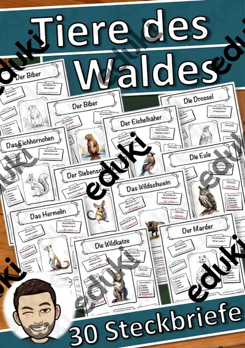

Waldschutz - Homeschooling
Mit diesem Material erhalten Sie ein Arbeitsblatt, geignet auch zur Heimarbeit, Homeschooling während der Schulschließung aufgrund des Coronavirus zum Thema: "Waldschutz - unsere Wälder schützen" inkl. Lösung. Dem Wald in Deutschland geht es schlecht. Expertinnen und Experten diskutieren schon länger, wie der Wald besser geschützt werden kann. Dieses Arbeitsblatt zeigt auf, wie dies gelingen kann.
FachBiologie
KlasseKl. 3–4
SchulformGrundschule
MaterialartStundenentwürfe, Unterrichtsreihen, Arbeitsblätter, Stationenlernen
Ähnliche Materialien

Tiere des Waldes - Steckbriefe inkl. Lösung - Waldtiere - Natur und Umwelt #Silvesterknaller23/24

03-21 Internationaler Tag der Wälder

Experte Lückentext mit Wortspeicher Hörverstehen und Suchsel

Was ist das Coronavirus? - Homeschooling

Tafelmaterial Coronavirus - Coronavirus

Homeschooling Materialpaket (auch Homeschooling) Coronavirus (wachsend) - Materialpaket

Ergänzungsset zum Coronavirus Arbeitsblatt - Materialpaket